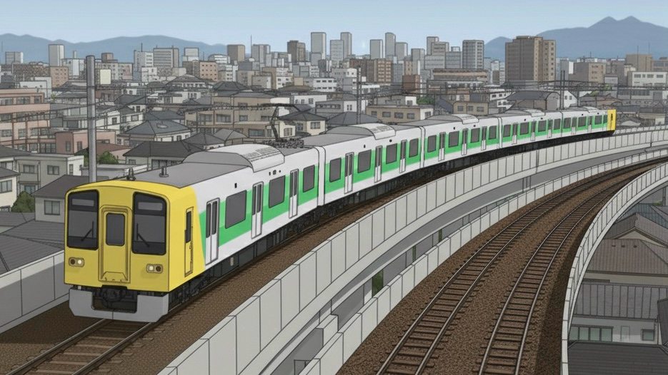
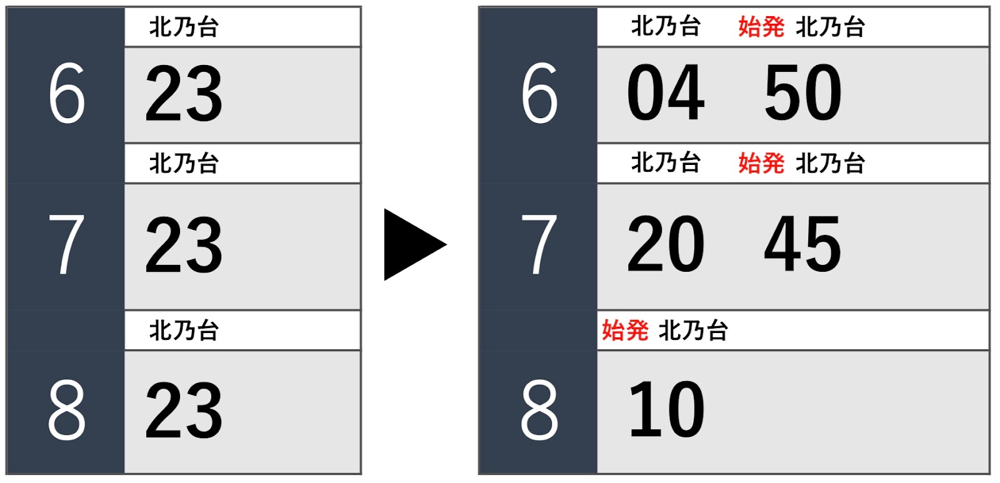
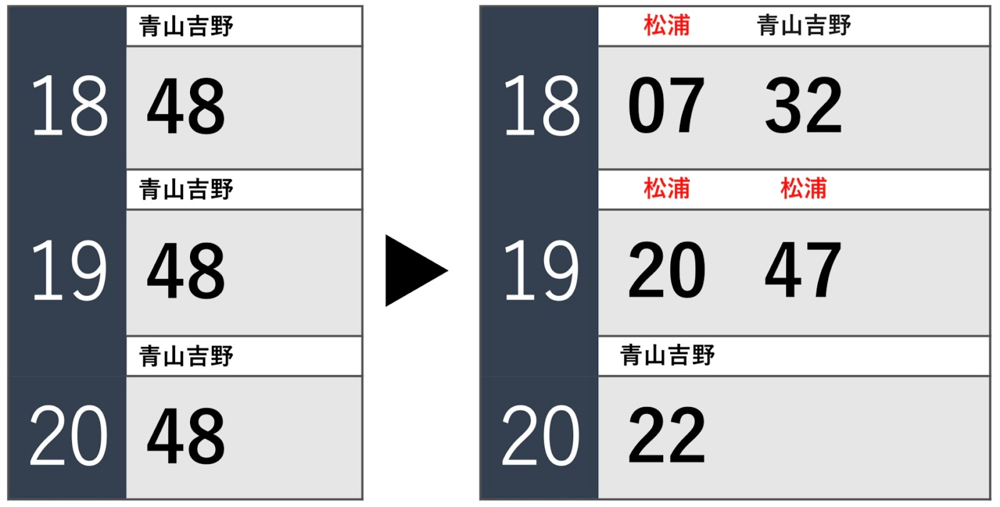

2025年12月ダイヤ改正について
今急電鉄では、2025年12月に特急「あつかわ」へのIE20000系導入および増車などのダイヤ改正を実施します。このたび、ダイヤ改正の内容がまとまりましたのでお知らせします。
ダイヤ改正の主な内容
- 今宮本線 特急「あつかわ」にIE20000系を導入
- 青山線 一部区間でのラッシュ時間帯の増発と乗り換え接続の改善
- 山北線 普通列車にIE2000系を試験導入
- 特急「きたくら」の一部列車の所要時間短縮
ダイヤ改正日
2025年12月14日（日）
1. 今宮本線の特急「あつかわ」にIE20000系を導入します
現在6両編成のIE10000系で運転されている特急「あつかわ」に、昨年まで特急「いまみや」で使用されていた7両編成のIE20000系を導入します。これにより、座席数が増加し、また特急「あつかわ」には初めてノーブルカーが導入され、より多くのお客様に快適にご利用いただけます。
都市圏〜西倉方面への観光やビジネスに是非ご利用ください。
2. 山北線の普通列車にIE2000系を導入します
山北線は来年夏から実施予定の普通列車の増便に伴い、現在大野線・松代線で使用されているIE2000系4編成を全面リニューアルの上導入します。その内既にリニューアル工事が完了している2編成を2025年12月より山北線に先行導入します。

3. 青山線の一部区間でラッシュ時間帯の増発を行います
現在青山線は全時間帯1時間に1本ほどの運行となっていますが、区間、時間帯ごとのお客様の利用状況をふまえて運行本数と運行時間を変更致します。
- 松浦〜北乃台間でのラッシュ時間帯の増発


また、上下線ともに日中時間帯の松浦駅の発着時刻を見直し、今宮本線の特急「あつかわ」から青山線へよりスムーズに乗り継ぎが出来るようになります。
4. 特急「きたくら」の一部列車の所要時間を短縮します
特急「きたくら」の一部列車の運行時刻を変更し、速達性を向上します。
| 下り | 列車名 | 有坂発 | 平城山発 | 笹沢発 | 塔間発 | 新楽温泉着 | 所要時間 |
|---|---|---|---|---|---|---|---|
| 改正前 | きたくら1号 | 8:04 | 9:06 | 9:58 | 10:17 | 10:50 | 有坂〜笹沢 114分→112分 |
| 改正後 | きたくら1号 | 8:04 | 9:06 | 9:56 | 10:14 | 10:47 | |
| 改正前 | きたくら7号 | 16:44 | 17:46 | 18:38 | 18:57 | 19:30 | 有坂〜新楽温泉 166分→163分 |
| 改正後 | きたくら7号 | 16:44 | 17:46 | 18:36 | 18:54 | 19:27 |
5. その他
- ご利用状況にあわせ、各線区で運行時刻と運行本数を見直します。
- 松代線新松原駅ホーム移設工事に伴い、上り新松原方面の終電の行先を変更します。